I’m an Aerospace Engineering graduate from the University of Bristol who’s passionate about innovation, from advancing aircraft performance to exploring automotive technologies and applying data-driven tools to real engineering challenges.
I’m driven by curiosity and daily learning: I enjoy diving deep into complex systems to understand them from first principles and turning that understanding into practical, efficient designs.
My experience spans aerodynamics, flight mechanics, and structural design, using tools such as MATLAB, Python, and finite element software (Abaqus, Nastran).
Currently, I work as a Junior Business Analyst in a Project Management Office, where I apply analytical thinking and problem-solving to support evidence-based decisions and cross-functional collaboration.
My goal is to keep learning and be someone who enables innovation, combining technical design expertise, data-driven insight, and leadership to help shape the future of technology.
Projects
Airbus Fixed-Wing Aircraft Design Project
AutoDesk Inventor • AutoCAD 360
As Chief Engineer, I led the end-to-end design of a 170-passenger, 4200 NM range commercial aircraft aimed at reducing direct operating costs by 15% compared to the Airbus A321neo.
I oversaw all aspects of the aircraft’s configuration; coordinating the aerodynamic, structural, performance, business and systems teams; to ensure performance optimisation, and regulatory compliance.
The final design featured a high-aspect-ratio low wing with folding tips, composite structures for weight reduction, and optimised aerodynamics achieving a 6% cost reduction.
I contributed by desigining the fuel system and landing gear, contributing to the integration of critical subsystems within the overall airframe, ensuring compliance with ICAO Code C and CS-25 standards.
This project enhanced my technical expertise in aerodynamics, structural analysis, and systems engineering, as well as my multidisciplinary project leadership and collaboration skills.
Chief EngineerFuel System DesignLanding Gear DesignSystems EngineeringEngineering Design
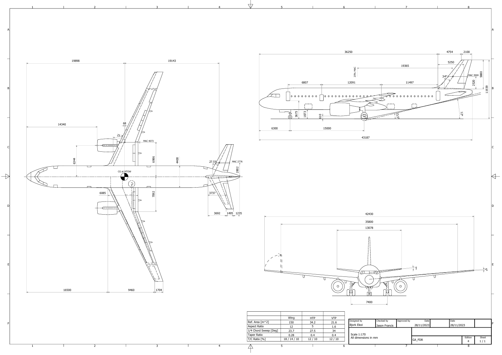
CAD Diagram of the Aeroplane
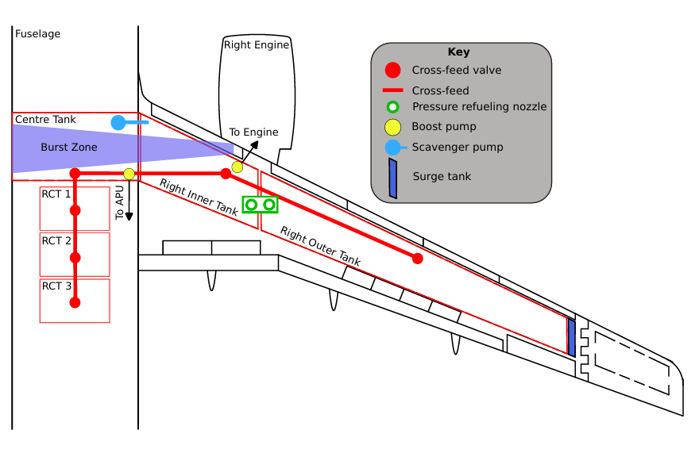
Fuel system schematic
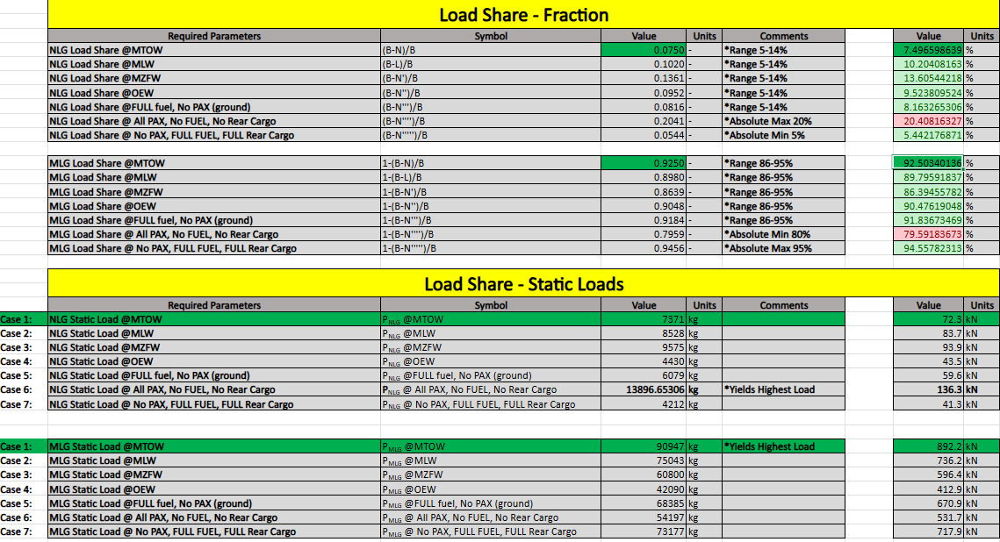
Landing gear load analysis
Chief Engineer: coordinated landing gear + fuel system workstreams across subteams.
Fuel system design: sizing, layout, venting, and failure cases; cross-checked against CS-25.
Landing gear loads: preliminary sizing, ground loads, and kinematics constraints.
Systems integration: weight/performance trade-offs, cost target tracking, compliance.
Outcome: 6% DOC reduction vs baseline; compliant with ICAO Code C & CS-25.
Offshore Wind Turbine Design
Ashes • Analysis • Sustainability
Designed and analysed an 18 MW offshore wind turbine using ASHES simulation software to optimise blade pitch control, structural integrity, and tower-foundation dynamics. Developed a pitch control schedule balancing aerodynamic efficiency and load regulation across operating regions. Performed structural checks on blades and tower under uniform and turbulent flows, identifying fatigue risks and resonance frequencies through modal and Campbell analyses. Proposed design optimisations for rotor diameter, material selection, and monopile foundation to enhance performance and reliability under offshore conditions.
DesignWind EnergyAerodynamics
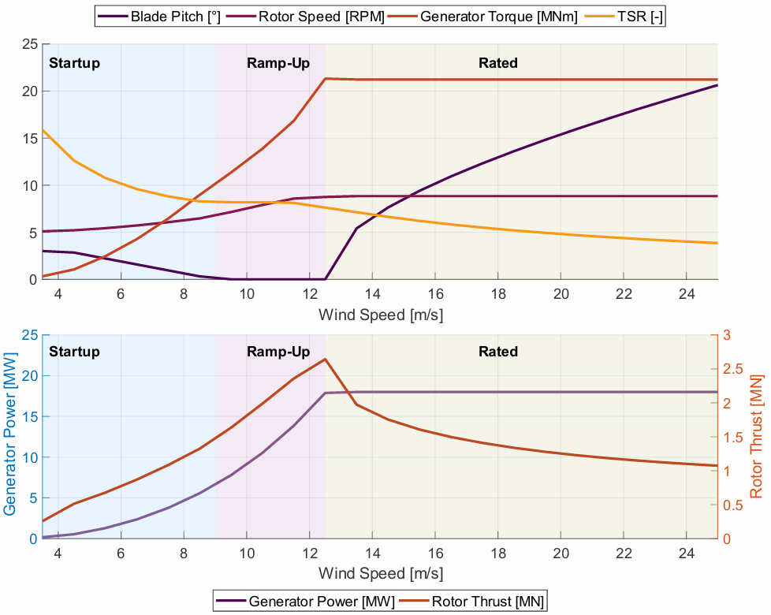
Power Curve Analysis
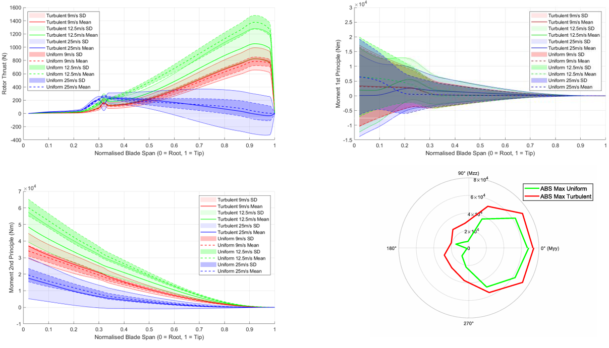
Wind Turbine Loads under Uniform and Turbulent Flow Conditions
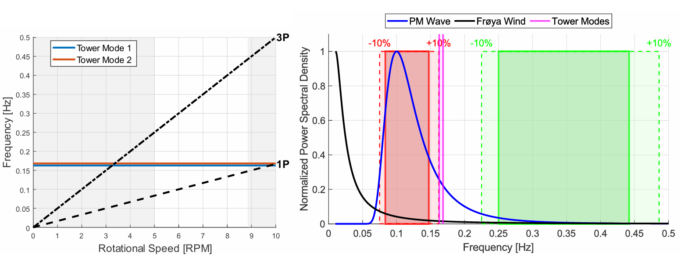
Campbell and Power Spectral Density Graph
Lead Analyst: conducted aerodynamic performance simulations using ASHES to generate turbine power curves.
Structural assessment: analysed tower and blade stresses under turbulent and uniform wind conditions.
Dynamic modelling: produced Campbell and modal diagrams to identify critical resonance regions.
Design optimisation: proposed pitch-control schedule and material changes to enhance fatigue life.
Reporting: authored the technical report highlighting sustainability benefits and offshore reliability improvements.
Wingbox Design and Optimization
Abaqus • Finite Element Analysis • Composites • Lightweight
Designed, analysed, and optimised a composite cantilever wing substructure using analytical methods and finite element analysis in Abaqus. Conducted stress, strain, and buckling analyses under a 9.8 MPa limit load, comparing linear and nonlinear responses to validate beam theory predictions. Applied Hashin’s failure criteria to identify failure modes and performed laminate layup optimisation to reduce deflection and increase buckling stability. The final design achieved a 40% reduction in vertical tip deflection and a 76% increase in failure load while maintaining mass and symmetry requirements, demonstrating proficiency in composite design, structural optimisation, and FEA validation.
DesignStructuresFailure
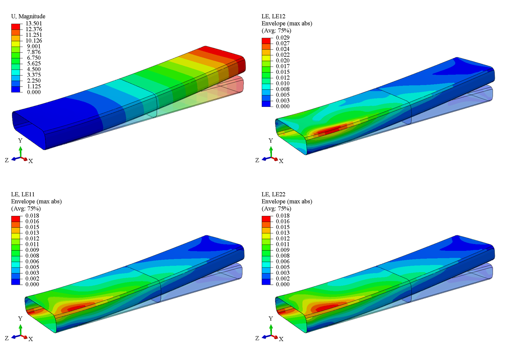
Contour Plots of Displacements and Strains
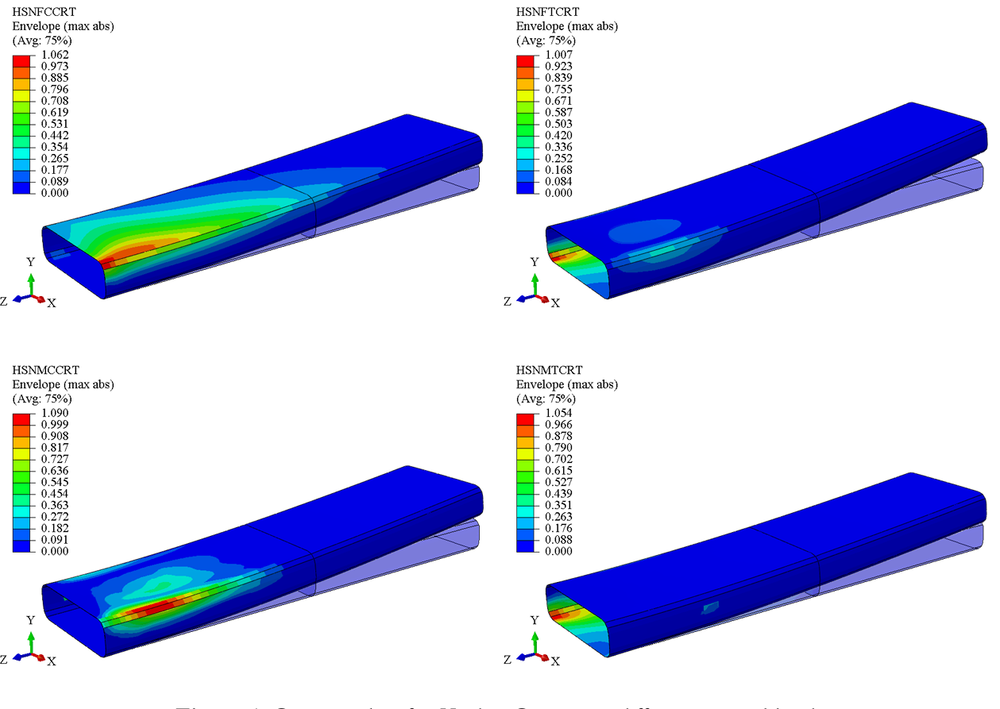
Contour plots for Hashin Criteria at different critical loads
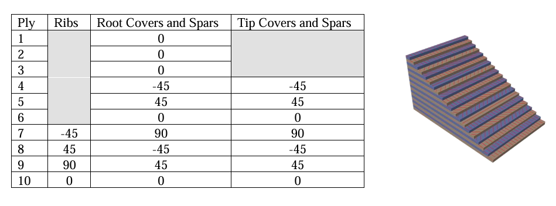
Composite Layup of Root Cover in Wingbox
Structural Designer: created the composite wingbox model and validated geometry and boundary conditions in Abaqus.
Finite Element Analyst: ran static and buckling analyses under limit and ultimate loads to verify stiffness and strength.
Failure criteria: applied Hashin’s method to locate critical fibre and matrix failures within the laminate lay-up.
Optimisation: refined ply orientation and stacking sequence to minimise tip deflection while maintaining mass balance.
Documentation: produced detailed plots and failure maps for inclusion in the final structural report.
Systems Engineering – Tethered UAV for Maritime Search and Rescue
FMECA Risk Assessment • MBSE • Tradeoff • Systems Integration
Worked on the preliminary systems design of a Tethered Unmanned Aerial Vehicle (TUAV) to improve radio communications during coastal search and rescue missions. Defined and verified system-level requirements based on operational, environmental, and reliability constraints from the client brief. Conducted functional modelling, FMECA risk assessment, and Model-Based Systems Engineering (MBSE) analysis for the TUAV’s tethering, radio, and propulsion subsystems. Performed trade-off studies comparing TUAV, SATCOM, and fixed-wing architectures, concluding that the TUAV offered the optimal balance between cost, bandwidth, and deployability.
SystemsSearch and RescueIntegration
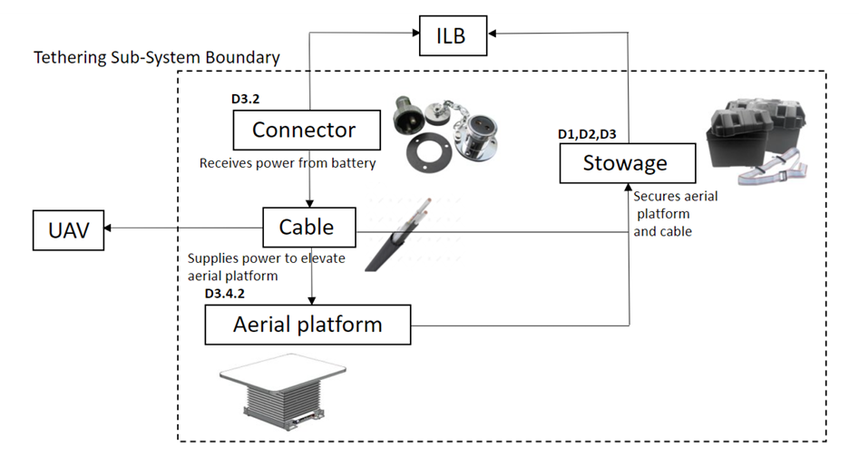
System architecture of Tethering Subsystem
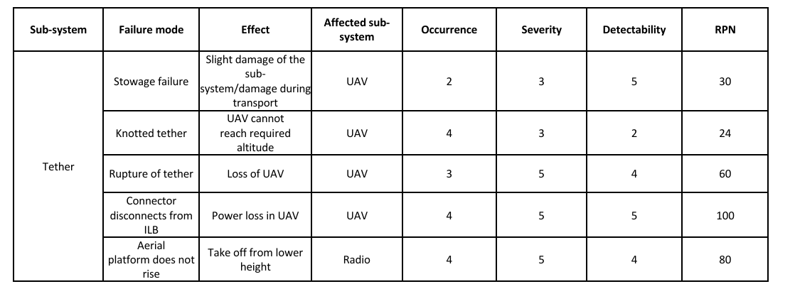
Failure Mode, Effects, and Criticality Analysis of the Tethering Subsystem
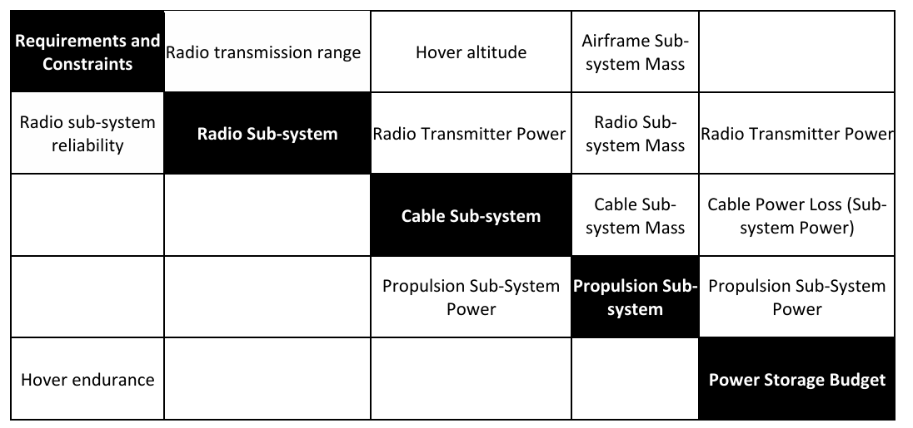
N-Squared Diagram of the MBSE
Systems Engineer: interpreted the client’s operational requirements into measurable system-level specifications.
Architecture development: modelled functional decomposition and subsystem interactions using MBSE tools.
Risk assessment: performed FMECA for tether, radio, and propulsion subsystems to identify critical failure modes.
Trade-off analysis: compared TUAV, SATCOM, and fixed-wing architectures to determine optimal cost-to-performance ratio.
Outcome: recommended TUAV architecture as most viable for rapid-deployment coastal rescue operations.
Hydrogen-Powered Search and Rescue Quadcopter
Quadcopters • Hydrogen • Fuel Cell • Endurance
Developed a mathematical model in MATLAB to optimise the mass and flight endurance of a hydrogen-powered search and rescue drone. The study compared lithium-polymer batteries and hydrogen fuel cells to determine the critical mass point where fuel cells become more efficient. Conducted sensitivity analyses on mass, energy density, and system efficiency, finding peak endurance when the energy system constituted two-thirds of the drone’s total mass. This project advanced sustainable UAV design and highlighted the potential of hydrogen propulsion for extended flight operations.
BatteryHydrogenAnalysis
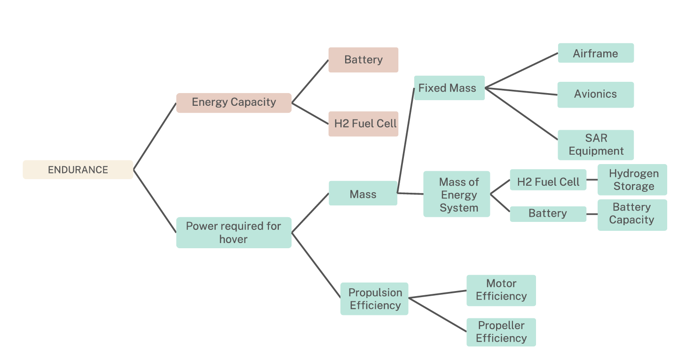
Variables considered for Endurance Analysis
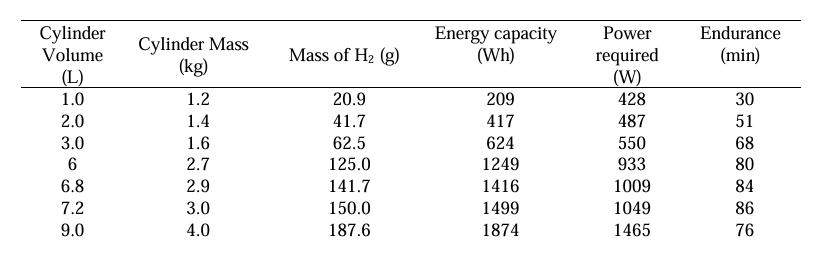
Different hydrogen storages affecting endurance
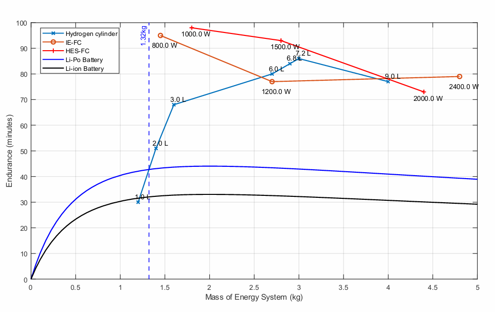
Endurance of different power sources
Performed aerodynamic analysis and optimization for a single-aisle, twin-engine 145-passenger airliner using XFLR5 and XFOIL. Conducted aerodynamic trimming, constraint diagram analysis, and drag breakdown (induced, viscous, pressure, and wave) at cruise conditions. Calculated total drag, static margin, and dynamic stability modes, validating results against the Airbus A320. Designed and analysed wing modifications—including aspect ratio increases and winglet configurations—to minimize induced drag, achieving a 33% reduction in induced drag coefficient and improved efficiency (Oswald factor increased from 0.95 to 0.98). This project demonstrated proficiency in aerodynamic modelling, stability analysis, and performance optimization through iterative design.
AerodynamicsDragOptimization
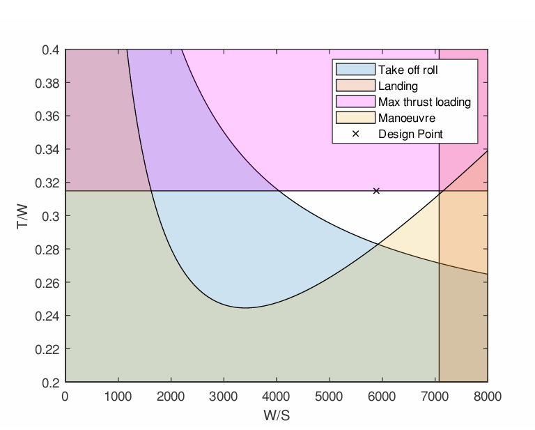
Constraint Diagram of the Aircraft
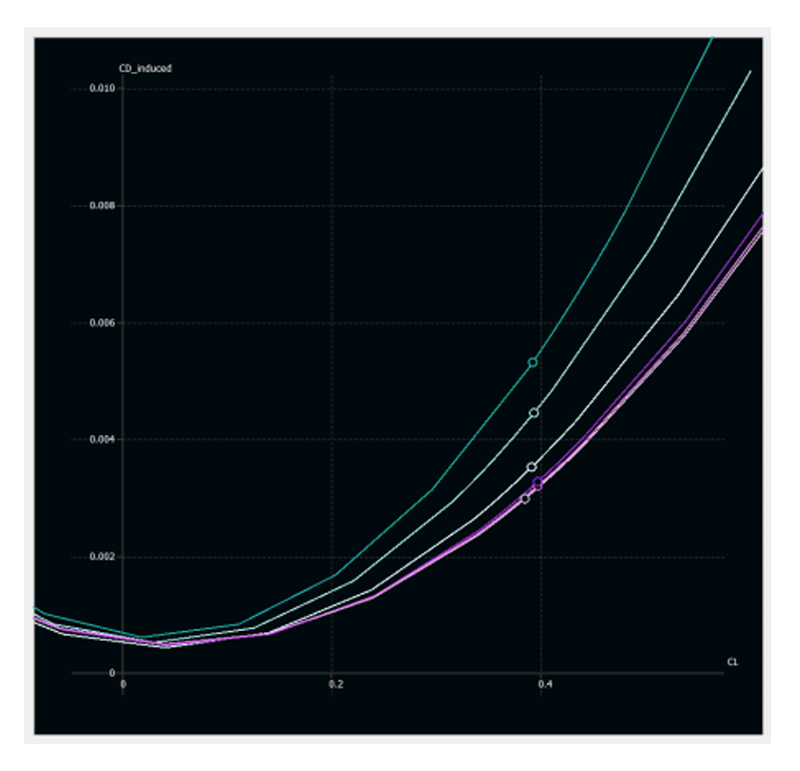
Induced Drag Coefficient vs Lift Coefficient variation due to aspect ratio and adding winglets
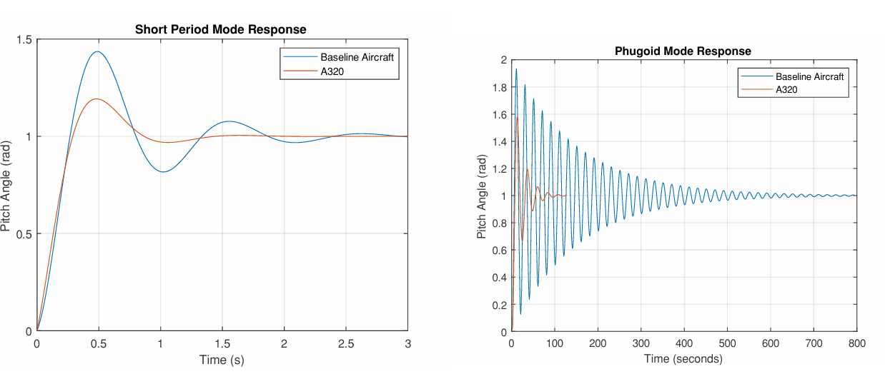
Responses for short period and phugoid mode
Aerodynamicist: used XFLR5 and XFOIL to evaluate airfoil characteristics, lift curves, and drag polars.
Performance analysis: performed constraint and mission range calculations for cruise, climb, and take-off phases.
Stability testing: assessed static margin and dynamic stability (short-period and phugoid modes).
Design refinement: introduced winglet geometry and aspect ratio changes to reduce induced drag by 33 %.
Benchmarking: compared aerodynamic coefficients against Airbus A320 baseline for validation.
UAV Design and Manufacturing – Lead Aerodynamics Engineer and Manufacturing Engineer
CNC • xFoil • CFD Analysis • Fixed Wing
As Lead Aerodynamics Engineer, I contributed to the design, analysis, and fabrication of a fixed-wing UAV prototype developed as part of a multidisciplinary team. I led the aerodynamic optimisation of the fuselage and tail configuration using XFOIL and wind tunnel testing, selecting and validating aerofoils (NACA 0009/0012) to balance stability, control authority, and drag reduction. Collaborating with the structures and manufacturing teams, I helped design and construct the composite fuselage and rear wing assembly, integrating carbon fibre spars, plywood ribs, and 3D-printed components. The project involved cross-functional coordination across aerodynamics, structures, control systems, and manufacturing, resulting in a flight-ready UAV that met stability, strength, and performance targets. This experience strengthened my technical expertise in aerodynamic design, CFD analysis, and practical manufacturing of aerospace structures.
AerodynamicsManufacturingLead Engineer
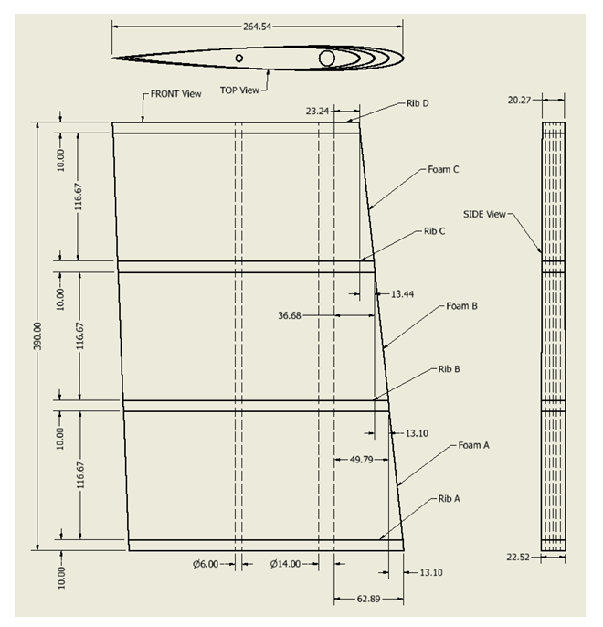
Assembly of the Vertical Tailplane
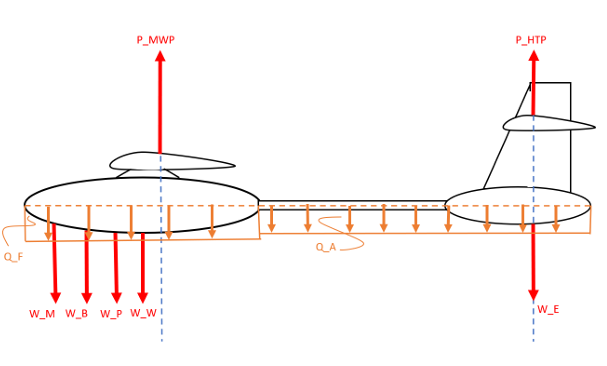
Free Body Diagram of the UAV
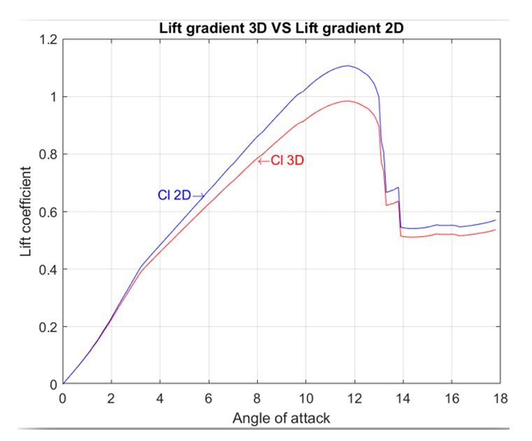
2D vs 3D Lift Gradient